|
Fanproject Supporterstoernooi 2007
|

De derde editie van het FP Supporterstoernooi had een record aantal deelnemers,
maar het aantal toeschouwers viel tegen vanwege het slechte weer.
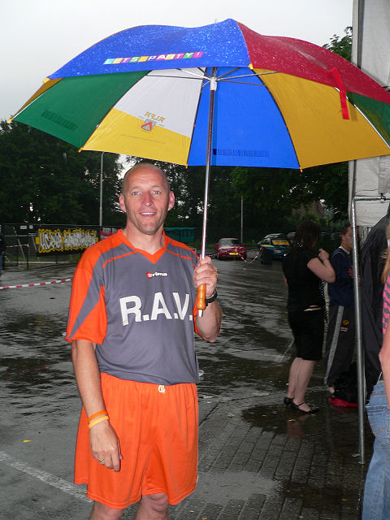
Weer of geen weer...ALFA-beer!

De Hanebretboys hebben zojuist hun wedstrijd tegen Brui va Vols II verloren.
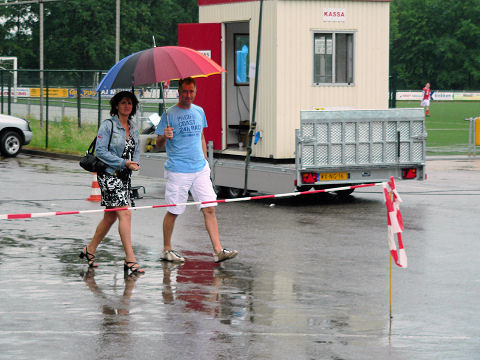
Huub Narinx en vrouw komen ook kijken.
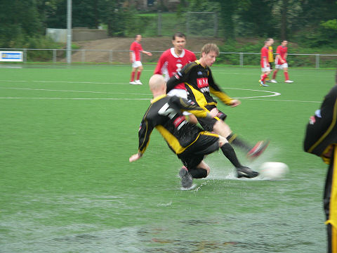
Het Fanproject dringt door tot de halve finales.
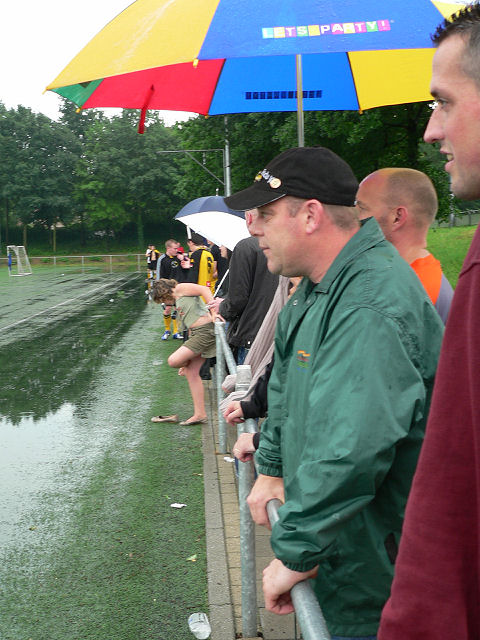
De publieke belangstelling wordt per ronde groter.
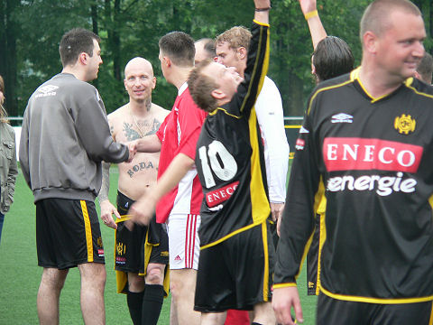
Het FP verliest na strafschoppen tegen Brui va Vols I.
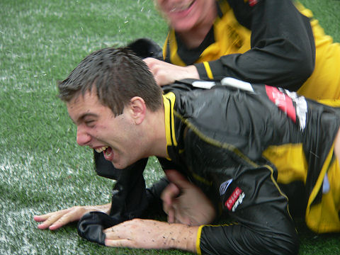
:-) 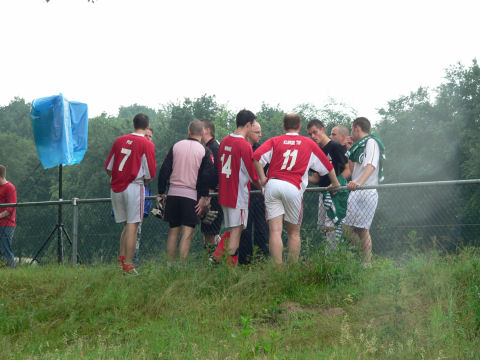
Brui va Vols staat al klaar voor de finale.
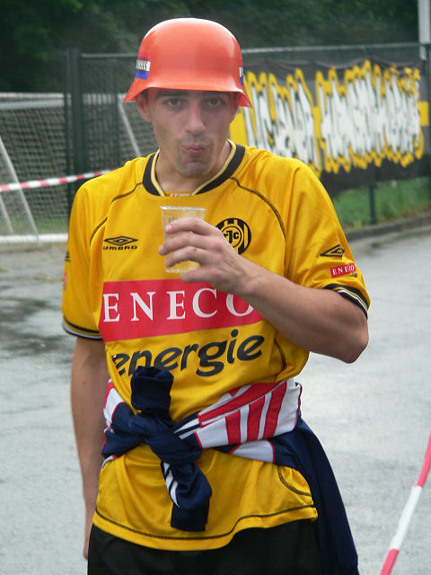
:-) 
De dames van de catering.
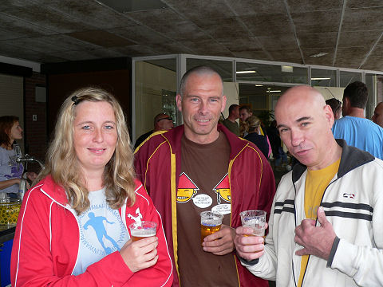
Patje en Melleke uit Oelegem als vanouds present.
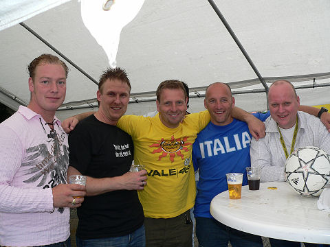
Meedoen is belangrijker dan verliezen...
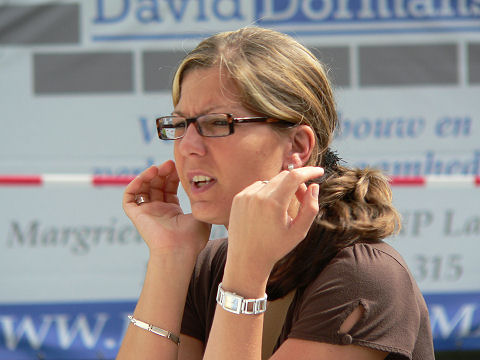
Deze dame is duidelijk geschokt door hetgeen zich op de achtergrond afspeelt:
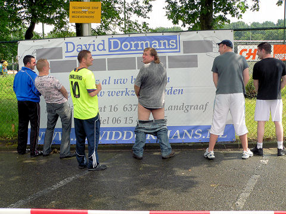
He he... 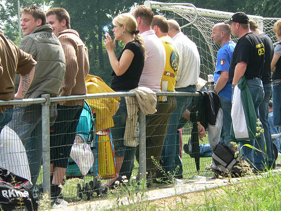
De zonnige finalewedstrijd tussen Brui va Vols I en Heilust.

Ramon met Marcel Michiels kapsel.
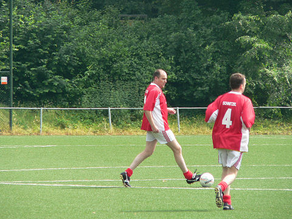
Controlerend middenvelder Ringo Sjteer aan de bal.
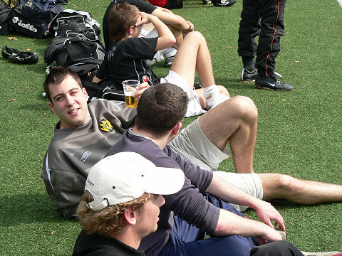
Plastic glas, plastic gras... waar moet dat heen?
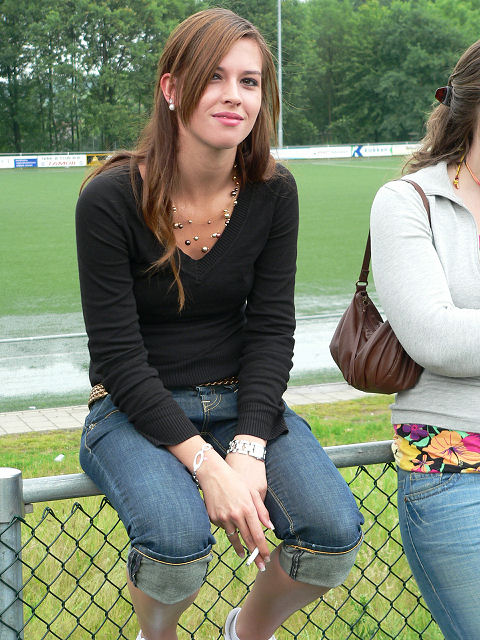
Proud to be Maud! 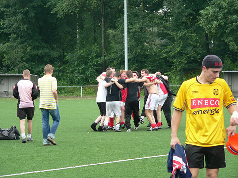
Brui va Vols winnen het toernooi, net als in 2005.
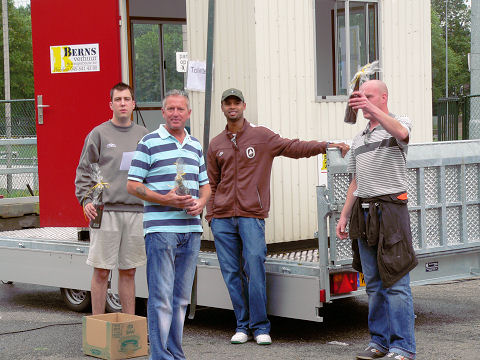
Humphrey Rudge verrichtte de prijsuitreiking.
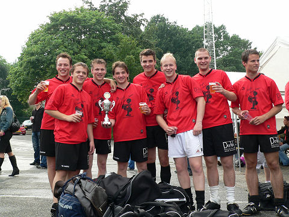
D'r Aowe Kino werd derde.
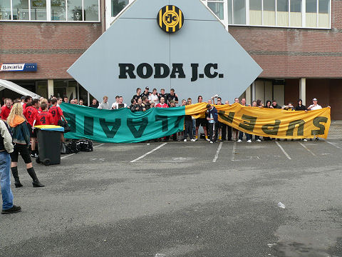
Een grand finale ontspint zich achter het op Pinkpop buitgemaakte doek van de
"Supervlaaien" uit Sittard.
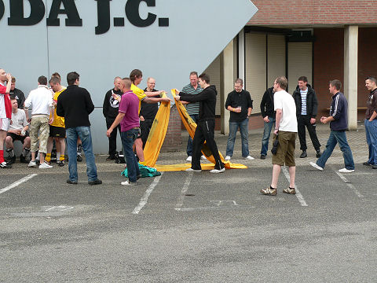
De vlag wordt netjes volgens protocol opgevouwen en bewaard tot een heel
speciaal
moment in het nieuwe voetbalseizoen.
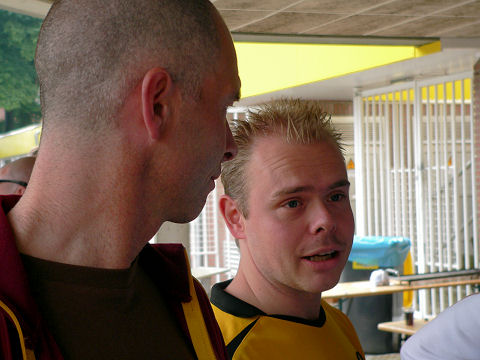
De Mechelenfans hebben morgen waarschijnlijk groot feest.
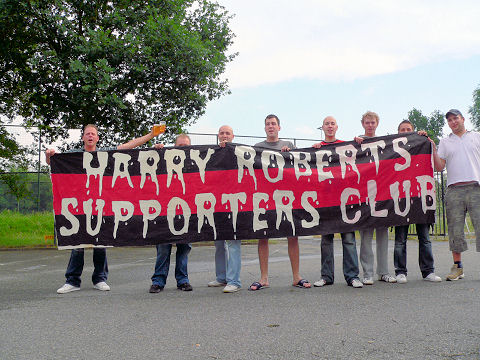
Een stukje geschiedenisles: Robert's murder of two policemen made him a hero in
some anarchist circles, and football crowds since the 1970s often chanted his
name
to antagonise the police. Chants like "Harry Roberts is our friend, is our
friend, is
our friend. Harry Roberts is our friend, he kills coppers" (to the tune of
London Bridge
is falling down). 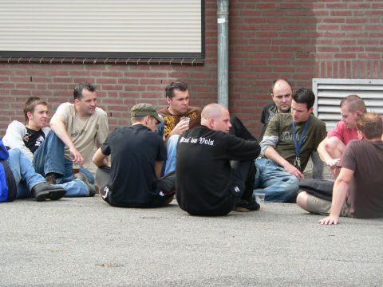
Cooling down van de Brui.
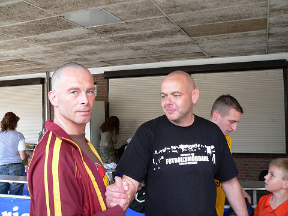
Kaalheide "stroomt" langzaam leeg.
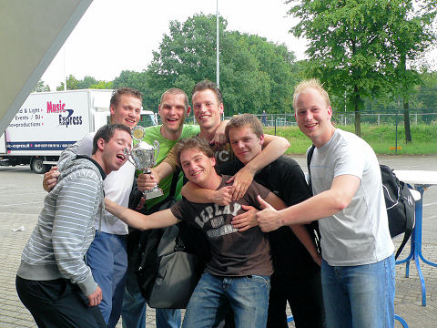
D'r Aowe Kino, winnaar derde prijs.
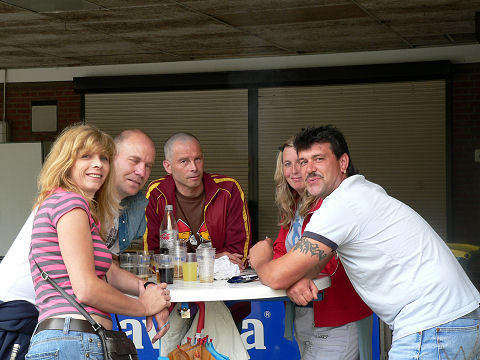
Niet gevoetbald en toch de finale bereikt... en gewonnen!
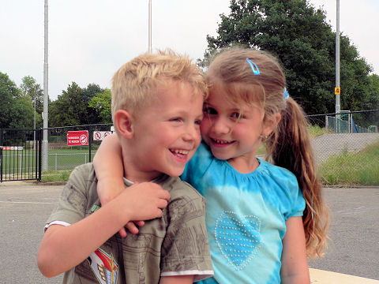
Aafgelaupe....!
© Koempels Pleasure Dome
|